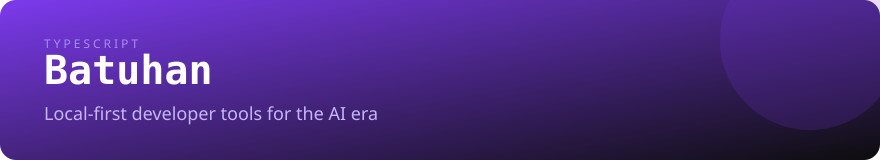
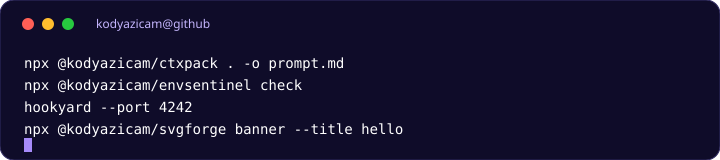

ctxpack
Packs a repository into an LLM-ready prompt. Respects .gitignore, budgets tokens, redacts secrets. Ships an MCP server.
npm i -g @kodyazicam/ctxpack
ctxpack . -o prompt.md
I build small, offline-first CLIs and MCP servers for developers and AI agents. No account, no upload, no telemetry.
Four Apache-2.0 tools. Three are on npm; hookyard installs from source.
Packs a repository into an LLM-ready prompt. Respects .gitignore, budgets tokens, redacts secrets. Ships an MCP server.
npm i -g @kodyazicam/ctxpack
ctxpack . -o prompt.mdValidates .env against a JSON schema, scans for leaked secrets, and generates .env.example plus TypeScript types.
npm i -g @kodyazicam/envsentinel
envsentinel checkGenerates README banners, cards, and stats as committed SVG files. 32 card types, 22 themes, no render service.
npm i -g @kodyazicam/svgforge
svgforge banner --title helloInspects, verifies, and replays webhooks locally. GitHub, Stripe, Slack, and Discord signatures; SSRF-safe replay.
git clone https://github.com/KodYazicam/hookyard
cd hookyard && pip install -e .
hookyard --port 4242The shortest path between your data and the result is the machine you are already using.

Adjacent work, kept honest about its status.
Small, scoped issues are ready. Pick one and open a PR.